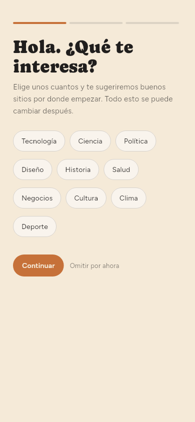
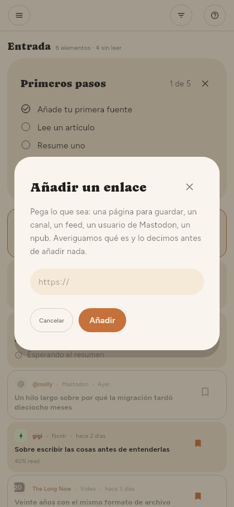
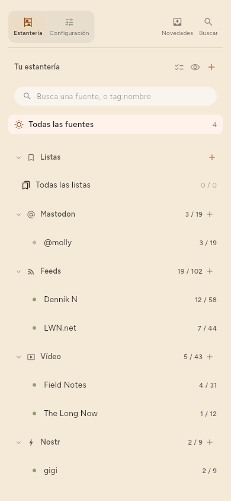
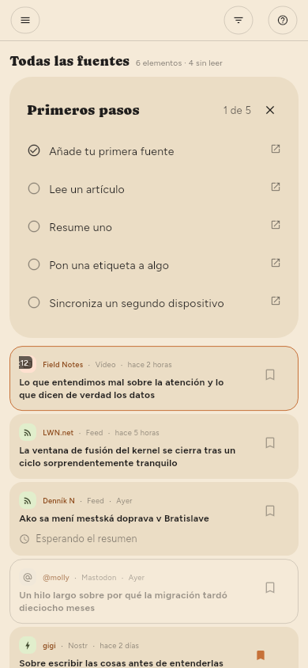
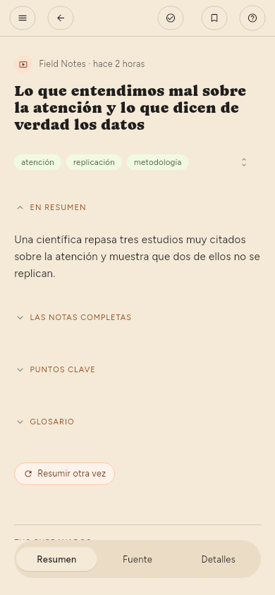
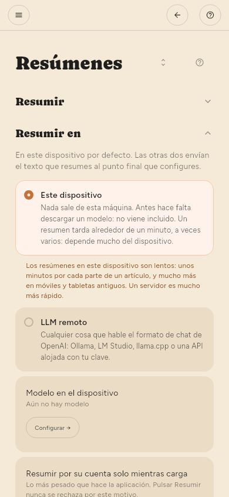
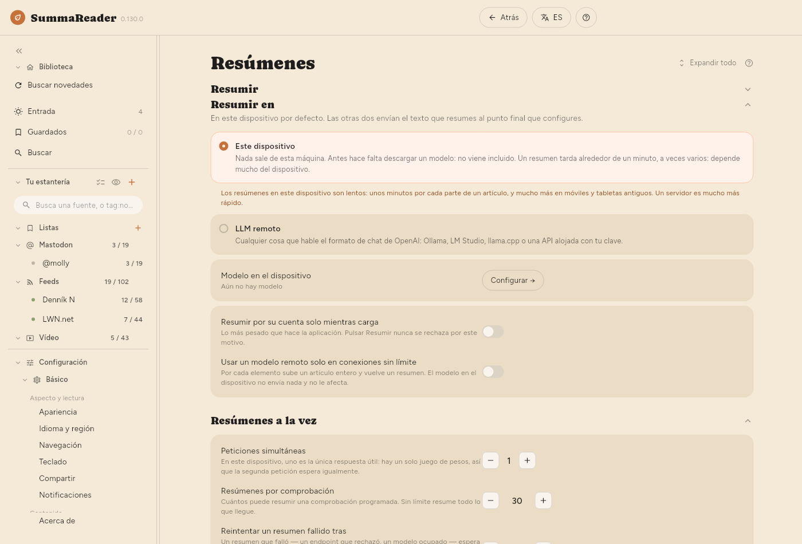
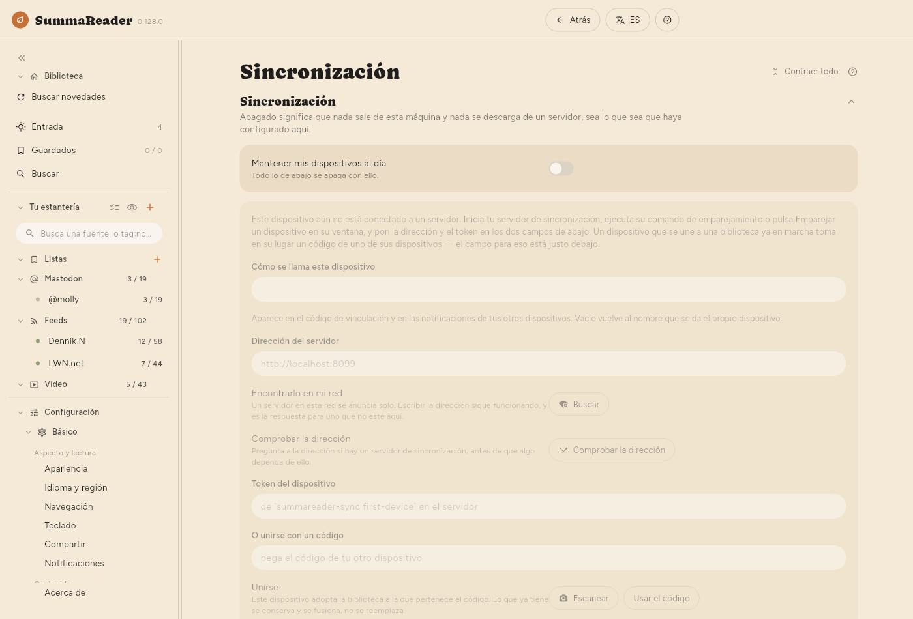

← Instalar · Contenido · Cómo empezar →
Primeros pasos
Estos pasos son iguales en un teléfono y en un ordenador, salvo donde un paso diga lo contrario. La lista Primeros pasos, arriba en la Entrada, sigue los mismos pasos y marca cada uno al completarlo. Pulsa × en ella para cerrarla.
En un teléfono, la pantalla es demasiado estrecha para mostrar más de una cosa a la vez:
- La estantería es la lista de todo lo que sigues, más Entrada, Guardados, Buscar y Configuración. En un teléfono está oculta. Toca ☰ arriba a la izquierda para abrirla.
- Un artículo se abre a pantalla completa. Toca ← para volver a la lista.
- Configuración está al final de la estantería. Tócala, luego Básico o Avanzado y luego una página.

En un ordenador, la estantería está siempre a la izquierda y el artículo se abre junto a la lista.
1. Añade tu primera fuente
Una fuente es cualquier cosa que la aplicación sigue por ti: el feed de un sitio de noticias, un canal de vídeo, una cuenta de Mastodon. Un feed es la lista de artículos nuevos que un sitio publica para programas como este.
La primera vez que abres la aplicación, te pregunta qué te interesa.
- Toca los temas que te interesan y luego toca Continuar.
- Toca una fuente sugerida para seguirla, o pega en el cuadro la dirección de un sitio o un canal y toca Añadir. Luego toca Continuar.
- Marca Resumir lo que leo para que la aplicación escriba resúmenes, o déjalo sin marcar. Puedes cambiarlo más tarde (paso 4).
- Toca Empezar a leer.
Si prefieres añadir fuentes más tarde, toca Omitir por ahora en la primera pantalla.

Para añadir una fuente en cualquier momento:
- Abre la estantería.
- Toca + junto a Tu estantería. Se abre el cuadro Añadir un enlace.
- Pega la dirección.
- Toca Añadir.
- Si el sitio ofrece elegir, selecciona el feed o la propia página. La aplicación marca una opción como recomendada.


2. Busca artículos nuevos
La aplicación comprueba tus fuentes según un horario. Para comprobarlas ahora:
- Abre la estantería.
- Toca Buscar novedades, debajo de Biblioteca.
Los artículos nuevos llegan a la Entrada.

Para cambiar con qué frecuencia comprueba la aplicación: Configuración › Básico › Descarga › Cada cuánto comprobar. Solo cuando lo pida detiene todas las comprobaciones automáticas.
La primera comprobación trae los artículos que la fuente tiene en ese momento. No son nuevos para ti, así que la aplicación no los resume automáticamente. Solo resume los artículos que llegan después de añadir la fuente.
3. Lee un artículo
- Toca un artículo en la Entrada.
- Léelo. El artículo tiene tres pestañas abajo: Resumen, Fuente (el texto completo) y Detalles.
- En un teléfono, toca ← para volver a la lista.



4. Activa los resúmenes y elige dónde se hacen
Un resumen lo escribe un modelo: un programa que lee el artículo y escribe una versión corta. El modelo funciona en uno de dos sitios.
- Este dispositivo: el modelo funciona en tu teléfono o tu ordenador. Nada sale del dispositivo. Descargas el modelo una vez. Los resúmenes en este dispositivo son lentos: unos minutos por cada parte de un artículo, y mucho más en teléfonos y tabletas antiguos.
- LLM remoto: el artículo va a un servidor que ejecuta el modelo: uno que gestionas tú o un servicio de pago. Un servidor es mucho más rápido. Es la única vez que el texto de un artículo sale de tu dispositivo.
Para configurarlo:
- Abre Configuración › Básico › Resúmenes › Resumir › Resumen y comprueba que está activado.
- En Configuración › Básico › Resúmenes › Resumir en, selecciona Este dispositivo o LLM remoto. La primera vez que seleccionas Este dispositivo, la aplicación te avisa de que aquí los resúmenes son lentos. Los resúmenes siguen en segundo plano mientras lees.
- Para Este dispositivo: abre Configuración › Avanzado › Modelo en el dispositivo › Buscar un modelo, busca y descarga un modelo. Luego, en Configuración › Avanzado › Modelo en el dispositivo › Modelos en este dispositivo, toca Arrancar junto a él.
- Para LLM remoto: abre Configuración › Avanzado › Servidor LLM › Servidor LLM. Rellena Dirección, Modelo y, si el servidor la pide, la clave de API. Toca Probar.
- Abre un artículo y toca Resumir.


En Premium, la aplicación también puede resumir automáticamente los artículos nuevos después de cada comprobación. Activa Resumir en los ajustes de una fuente (consulta Gestionar las fuentes).
5. Pon una etiqueta a algo y guárdalo en una lista (solo Premium)
Las etiquetas y las listas están en Premium.
Una etiqueta es una palabra que pones a un artículo o a una fuente, por ejemplo linux. El resumen sugiere etiquetas.
- Abre un artículo.
- Debajo del título, toca una etiqueta sugerida para aceptarla, o toca el lápiz (Editar etiquetas) para escribir las tuyas.
Una lista reúne artículos. Guardados es la primera lista.
- Abre un artículo.
- Toca el marcador de arriba para guardarlo en la lista actual.
- Para usar otra lista, mantén pulsado el marcador y luego selecciona una lista o crea una nueva.
6. Empareja un segundo dispositivo
La sincronización mantiene al día tus dispositivos: lo que lees, lo que guardas y los propios artículos. Necesita un servidor de sincronización que gestiones tú. El servidor solo guarda datos cifrados y no puede leer tu biblioteca.
Descarga el servidor desde su página de versiones; Conseguir el servidor dice qué archivo elegir.
En el primer dispositivo:
- Abre Configuración › Avanzado › Sincronización › Sincronización.
- Activa Mantener mis dispositivos al día.
- Rellena Dirección del servidor y Token del dispositivo. El servidor te da los dos.
- En Configuración › Avanzado › Sincronización › Otro dispositivo, toca Crear un código. La aplicación muestra un código QR y el mismo código en texto.
En el segundo dispositivo:
- Instala la aplicación y abre Configuración › Avanzado › Sincronización › Sincronización.
- Activa Mantener mis dispositivos al día.
- Debajo de O unirse con un código, toca Escanear y apunta la cámara al código QR. En un dispositivo sin cámara, pega el código de texto en el campo. En Linux, una webcam puede escanear el código.
- Toca Usar el código.
El código lleva la clave de tu biblioteca. Muéstralo solo a tu propio dispositivo y ciérralo cuando termines.


7. Crea el código de recuperación
El código de recuperación es la única forma de volver a tu biblioteca si pierdes todos los dispositivos emparejados. Nadie puede volver a generarlo por ti.
- Abre Configuración › Avanzado › Sincronización › Clave de recuperación › Código de recuperación.
- Toca Crear.
- Apunta el código. Guárdalo en un lugar al que puedas llegar aunque este dispositivo desaparezca. La aplicación lo muestra una vez y no guarda ninguna copia.